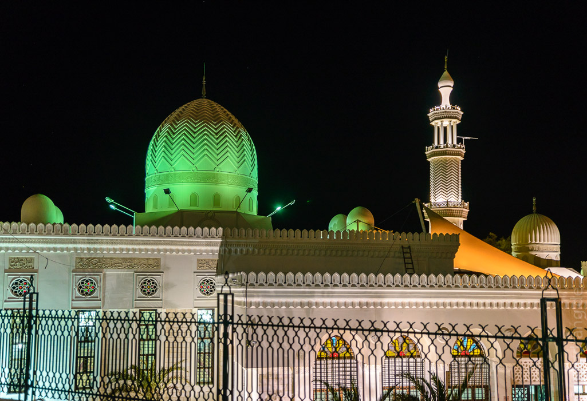
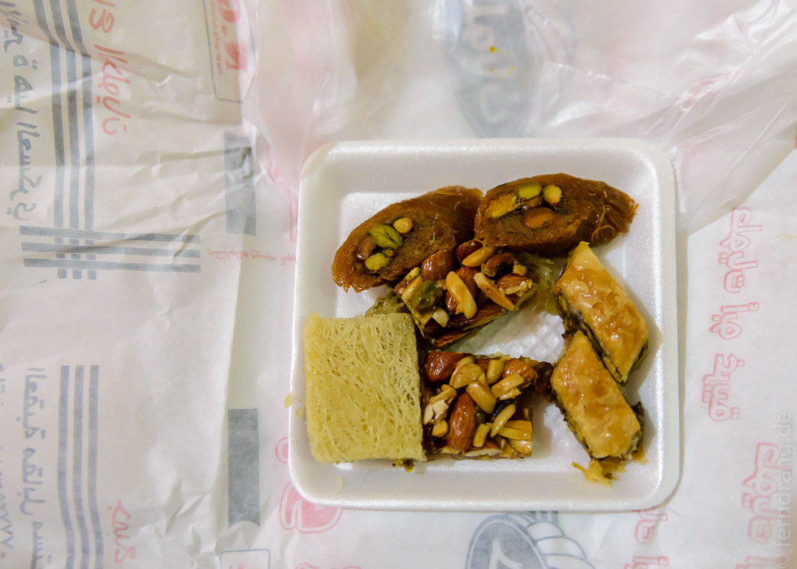

28/09/2016
Akaba-Küste
Mit dem Rum-Ausflug beenden wir den aktiven Teil der Reise und freuen uns auf Entspannung an der Küste von Akaba. Die Fahrt dauert nicht lang. Am South Beach Highway sind einige Tauchhotels, doch hier merkt man deutlich, dass die Zahl der Besucher zurückgegangen ist. Das erste Hotel finden wir zwar geöffnet jedoch vollständig verlassen vor. Alle Türen stehen offen, dahinter liegen Tauchequipment, Getränke, Liegen am Pool, aber keine Menschenseele. Im nächsten Hotel ist die Crew gerade dabei im Swimming Pool die Bettwäsche zu waschen. Wäre ja schade, das schöne Wasser zu verschwenden. Wir stehlen uns davon, solange sie beschäftigt sind. Letztlich landen wir bei den "Arab Divers", bei denen wir nett empfangen werden.
Die nächsten Stunden und Tage verbringen wir mehr oder weniger reglos am Pool. Der Wind bläst hier so stark, dass regelmäßig alles ins Wasser geweht wird, was nicht angeschraubt ist, wie Stühle, Handtücher, Besteck, Getränke. Nach den zahlreichen Wanderungen ist das Nichtstun genau das Richtige.
Nach nunmehr sieben Jahren Pause raffen wir uns wieder zum Tauchen auf. Das läuft hier ziemlich unkompliziert ab, da die Tauchspots alle vom Strand aus erreichbar sind, der direkt am Ende der Straße liegt. Der Strand sieht aus wie eine Müllkippe, nur die Parkplätze und die fest installierten Sonnenschirme deuten auf eine nicht-industrielle Nutzung des Sandstreifens hin. Tatsächlich wird es hier freitags aber rappelvoll, vor allem gegen Abend, wenn der Dreck nicht mehr so auffällt.
Abtauchen lohnt sich trotzdem. Unter Wasser ist es nicht nur recht sauber, in den schönen Korallengärten gibt es auch viel zu sehen. Wir müssen den Blick wieder auf Meerestiere eingewöhnen und unser Fischgedächtnis aktivieren. Dann kann man eine Menge Riffbewohner sehen, bevor es zu kalt wird. Ein versenkter Panzer sorgt für Lokalkolorit.
Das Essen im Hotel, wie zuerst der Kellner und dann der Gaumen verraten, kommt aus der Tiefkühltruhe. Daher fahren wir abends oft nach Akaba hinein, das nur eine Viertelstunde entfernt liegt. Hat man die Hafenanlagen passiert, verbreitet die große Uferstraße mit ihren Palmen einen leichten Urlaubsflair. Es gibt reichlich Auswahl an Restaurants und Essständen. Am Freitagabend platzt die Stadt aus allen Nähten und man kann das Treiben vom Stau aus genießen. Der Stadtstrand sieht so aus wie unserer Tauchstrand und ist ziemlich voll. Die Menschen kampieren mit Zelten unter dem "Zelten verboten"-Schild und überall wird Shisha geraucht. Die Kohlen-Boys schleudern ihre Öfchen im Kreis und lassen die Funken fliegen.
Ansonsten ist in jedem zweiten Haus in Akaba ein Nussladen. Die Leute scheinen ganz wild darauf zu sein und kaufen Nüsschen, Mandeln und Pistazien in Kilosäcken. Diese Läden verkaufen auch Gewürze und verströmen einen tollen Geruch. Akaba hat auch im Gegensatz zu Amman eine ganz hübsche Moschee. Wir haben einen netten Obstladen entdeckt, der unser neues Lieblingsgetränk "Lemon with Mint" anbietet. Wir sitzen auf Plastikstühlen im Neonlicht und beobachten die vorbeiziehenden Leute. Wenn der Muezzin dann bei Sonnenuntergang ruft, der Mann im Süßigkeitenladen nebenan sich hinter der Theke auf seinen Teppich kniet und auf der Straße das Hupen einfach weiter geht, dann ist man wohl in Arabien.
